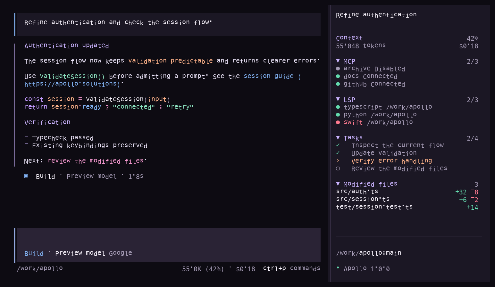

01 / APOLLOV razvoju
Apollo 1
Naš lasten veliki jezikovni model nastaja kot osnova za agentske delovne procese. Njegove zmožnosti in načrte za izdajo bomo objavili med razvojem.
Razvija Apollo Solutions
Apollo 1 je naš lasten jezikovni model za agentske delovne procese. Apollo Agent nastaja kot osredotočen način uporabe agenta z nekaj jasnimi izbirami njegove osebnosti, nalog in veščin. Oba sta v razvoju.
Naš lasten veliki jezikovni model nastaja kot osnova za agentske delovne procese. Njegove zmožnosti in načrte za izdajo bomo objavili med razvojem.
Osredotočen agent, ki ga želimo preprosto nastaviti. Načrtujemo nekaj jasnih izbir za osebnost, naloge in veščine, da ima agent od začetka določeno nalogo.
Razvoj s pomočjo AI, neposredno v terminalu. Odprite projekt, izberite model ter ohranite pogovor, orodja, naloge in spremembe v enem osredotočenem delovnem prostoru.
macOS · Apple silicon · Odprta koda
Izberite izhodišče
Pomagamo vam, da vas stranke lažje najdejo, kupujejo pri vas ali da vaše delo teče bolj gladko. Izberite področje in si oglejte, kaj lahko naredimo.
Ustvarjamo spletne strani za podjetja, ki želijo jasno predstaviti svoje storitve, nastanitve ali izdelke in obiskovalcem olajšati naslednji korak. To vključuje tudi nastanitvene in druge storitvene dejavnosti; obseg vsake strani prilagodimo njenim obiskovalcem in vsebini.
Za trgovce, ki želijo, da stranke zlahka najdejo izdelke in samozavestno opravijo nakup. Katalog, iskanje, strani izdelkov, košarico in zaključek nakupa lahko prilagodimo vaši ponudbi in načinu izpolnjevanja naročil.
Oblikujemo osredotočeno programsko opremo za ponavljajoče se ali razdrobljeno delo: orodja za stranke, notranje delovne procese in povezave med sistemi, ki jih ekipa že uporablja.
Raziščite lokalne jezikovne modele za delovne procese, pri katerih so pomembni nadzor nad tokom podatkov, predvidljiva uporaba ali prilagojena postavitev. Apollo pripravlja namestitve za DGX Spark; pred priporočilom modela preverimo nalogo in opremo.
Lokalna AI, razumljivo
Odprite vprašanje za podrobnosti, ki jih potrebujete.
Znan delovni dan
Predstavljajte si, da stranka vašo trgovino po e-pošti vpraša, kdaj bo prejela naročilo. Zaposleni lahko AI prosi, naj pripravi odgovor na podlagi pravil dostave. Tako prihrani nekaj minut. Preden deli podatke stranke, naj premisli, katere podatke AI potrebuje in kam bodo poslani.
Isti odgovor lahko pripravimo na dva načina.
Zaposleni pošljejo izbrano besedilo prek interneta → ponudnik ga obdela → vrne se osnutek. Kopije ali dnevniki se lahko hranijo po pravilih izdelka.
Zaposleni pošljejo le potrebne podatke modelu na opremi podjetja → osnutek ostane v podjetju. Preverite, da povezave, dnevniki, varnostne kopije in posodobitve vsebine ne pošiljajo drugam.
Kaj preveriti pri vsaki gostovani storitvi
Odgovori so odvisni od izdelka, računa, nastavitev in pogodbe. Poslovni račun ali API se lahko razlikuje od osebnega računa za klepet.
Ali bo ponudnik sporočilo uporabil za izboljšanje prihodnjih različic AI? Izklop učenja omeji to uporabo, sam po sebi pa ne izbriše shranjenih kopij.
Ali se bodo poziv, odgovor ali dnevniki hranili, kje, pri kom in kako dolgo? Shranjeni podatki se lahko pozneje uporabijo za dovoljen varnostni pregled ali podporo, postanejo pomembni pri pravni zahtevi ali so izpostavljeni ob varnostnem incidentu.
Ali lahko organ od ponudnika, za katerega velja njegova pristojnost, zahteva podatke, ki jih ta še hrani ali nadzoruje? Za to je potrebna pravna podlaga z obsegom in omejitvami. To ni samodejen dostop do vseh pogovorov.
Objavljeni pogoji / primeri
Primeri preverjeni 25. septembra 2026. Izberite ponudnika in primerjajte pogoje. Pred uporabo preverite pogoje konkretne storitve in njene nastavitve.
Osebni pogovori imajo nastavitev za učenje; podatki paketov Business, Enterprise in API se privzeto ne uporabljajo za učenje. Vsebina API se lahko hrani do 30 dni, z izjemami in možnostjo ničelne hrambe za upravičene uporabe.
Osebni uporabniki lahko izberejo, ali pogovori izboljšujejo Claude. Poslovni pogovori in seje API se privzeto ne uporabljajo za učenje; običajni vhodi in izhodi API se izbrišejo v 30 dneh, z navedenimi izjemami.
Grok za osebno uporabo ima nastavitve učenja. Za API ponudnik navaja, da brez dovoljenja ne uči na vhodih in izhodih, jih pa privzeto hrani 30 dni za preverjanje.
Pravila aplikacije navajajo, da se lahko vnosi uporabijo za izboljšanje ali učenje tehnologije, in omogočajo izključitev. Pogoje API preverite posebej; pravila aplikacije ne opisujejo vseh nadaljnjih storitev.
Pravilnik o zasebnosti Kimi navaja, da se lahko vsebina pogovorov po psevdonimizaciji uporabi za izboljšanje modelov; uporabniki lahko zahtevajo izključitev. Anthropic ločeno trdi, da so bili nekateri zahtevki Kimi brez vednosti uporabnikov poslani Claudu.
Model Studio navaja, da brez izrecnega soglasja ne uporablja poslovnih podatkov strank za razvoj ali izboljšanje modelov. Preverite pogoje obdelave konkretnega izdelka Alibaba in regije.
Pogoji klepeta Z.ai dovoljujejo uporabo vsebine uporabnikov, ki ni osebni podatek, za izboljšanje AI ter obdelavo zunaj vaše lokacije. Pogoji API navajajo, da se vsebina končnih uporabnikov uporablja za zagotavljanje API, razen če izrecno soglašate z drugo uporabo. Preverite, katero pot uporabljajo zaposleni.
Za ustrezne pakete Workspace Google navaja, da se pozivi, vsebina Workspace in odgovori brez dovoljenja ne uporabljajo za učenje generativnih modelov AI zunaj domene stranke. Pogoji za osebni Gemini in API za razvijalce se razlikujejo.
Microsoft navaja, da se pozivi, odgovori in podatki Graph v Microsoft 365 Copilot ne uporabljajo za učenje temeljnih modelov. Poslovni pozivi in odgovori se lahko shranijo v Microsoft 365 ter hranijo glede na nastavitve skladnosti organizacije. Osebni Copilot ima ločene nastavitve učenja.
Podatki brezplačnega Le Chat se lahko uporabijo za učenje, razen če uporabnik to izključi. Team in Enterprise sta privzeto izključena; poslovni pogoji API imajo tudi izjeme, na primer za povratne informacije in preizkusne modele. Hramba API je odvisna od končne točke in nastavitev.
Meta navaja, da se lahko pogovori z njeno AI uporabijo za izboljšanje odgovorov in prilagajanje vsebine; uporaba in možnosti izključitve so odvisne od regije in funkcije. Novejši anonimni klepet je ločen začasni način, ne privzeti način vseh vmesnikov Meta AI.
Sodni in regulatorni dokumenti
Pri vsakem primeru je navedeno, za kakšno vrsto dokazov gre: trditev podjetja, predhodni ukrep regulatorja, sodna odločba ali poravnava. Nekateri starejši primeri varstva zasebnosti na družbenih omrežjih so nastali pred generativno umetno inteligenco in ne povedo, kako so bili obravnavani pozivi AI. Kažejo pa, zakaj je smiselno preveriti uporabo podatkov, hrambo in zaščitne ukrepe za točno določen izdelek in vrsto računa.
V poročilu, objavljenem 10. septembra 2026, Anthropic trdi, da je Moonshot nekatere zahtevke strank Kimi brez njihove vednosti posredoval Claudu, njegove odgovore pa prikazal kot odgovore Kimija. Anthropic navaja, da je v enem desetdnevnem obdobju zaznal skoraj 300.000 posredovanih zahtevkov; po navedbah poročila je Moonshot shranil vsaj del pogovorov, da bi iz odgovorov izluščil sklepanje modela za učenje. Zahtevki naj bi vsebovali občutljive podatke strank, med drugim interno kodo, aktivne dostopne ključe in posnetke nadzornih kamer. To so ugotovitve Anthropica, ne neodvisna sodna odločba; Anthropic pravi, da ne ve, ali je Moonshot o tem obvestil prizadete stranke.
The Information je 22. septembra ob sklicevanju na svoje vire poročal, da kitajski organ za kibernetski prostor preiskuje Moonshot in DeepSeek zaradi morebitnega posredovanja uporabniških podatkov Anthropicu ter da je zaslišal zaposlene v podjetjih. Po poročilu je preiskava 25. septembra 2026 še potekala, odločitev o kazni pa še ni bila sprejeta. Poročana preiskava ni javna ugotovitev, da je do kršitve prišlo.
Anthropic v poročilu iz septembra 2026 pripisuje kampanjo za izluščanje sklepanja iz Clauda podjetju Zhipu, ki na mednarodnih trgih uporablja znamko Z.ai. Anthropic navaja, da je 273 računov v enem desetdnevnem obdobju izvajalo postopek za izluščanje sklepanja, Zhipuju pa pripisuje več kot 3,4 milijona zahtevkov v 17 dneh junija in julija 2026. Navaja tudi, da so bili nekateri rezultati uporabljeni za učenje modelov GLM. Gre za navedbe Anthropica o dejavnosti destilacije modela, ne za ugotovitev sodišča ali regulatorja. Poročilo ne navaja enake trditve kot za Moonshot in DeepSeek: da je Z.ai brez vednosti skrivaj preusmerjal pozive svojih strank k Claudu.
Avtorji so trdili, da je Anthropic brez dovoljenja kopiral knjige. Ameriški sodnik je junija 2025 razsodil, da je bila uporaba knjig za učenje modelov poštena uporaba, ločeno pa je odločil, da hramba piratskih kopij v stalni knjižnici ni bila poštena uporaba. Julija 2026 je sodišče odobrilo poravnavo skupinskih zahtevkov glede teh kopij v višini 1,5 milijarde dolarjev. Poravnava ni državna globa ali priznanje, da je vsako učenje AI nezakonito.
Italijanski organ za varstvo podatkov je decembra 2024 OpenAI kaznoval s 15 milijoni evrov. Med razlogi je navedel svoje ugotovitve o pravni podlagi in preglednosti pri uporabi osebnih podatkov za učenje ChatGPT. Rimsko sodišče je 18. marca 2026 odločbo organa razveljavilo. Globa zato ni veljavna pravnomočna kazen, ugotovitev organa pa ne smemo predstavljati kot dokončno sodno sodbo.
Ameriško sodišče je maja 2025 med sodnim sporom glede avtorskih pravic OpenAI naložilo hrambo dnevnikov izhodov, ki bi bili sicer izbrisani. Poznejši sodni dokument je 26. septembra 2025 končal splošno obveznost nadaljnje hrambe, z omejitvami za nekatere že shranjene zapise. Šlo je za sodno zahtevo v konkretnem sporu, ne za splošno pravilo storitve ali ugotovitev, da so bili dnevniki uporabljeni za učenje.
Januarja 2025 so podjetja DeepSeek italijanskemu organu sporočila, da ne poslujejo v Italiji in da zanje ne velja evropska zakonodaja o varstvu podatkov. Organ je navedel, da je bila storitev dostopna italijanskim uporabnikom, začel preiskavo in omejil obdelavo; v poznejši formalni odločbi je določeno obdelavo razglasil za nezakonito po GDPR. Objavljeni dokumenti kažejo nesoglasje in ukrep regulatorja, ne pa sodne ugotovitve, da so podjetja namerno lagala. Odločba ni naložila denarne kazni.
Ukrep, povezan z AI: brazilski organ za varstvo podatkov (ANPD) je julija 2024 odredil, naj Meta v Braziliji začasno preneha uporabljati javne vsebine s svojih platform za učenje generativne AI. Organ je navedel predhodne pomisleke glede pravne podlage, jasnega obvestila, možnosti ugovora uporabnikov in podatkov mladoletnih. Za nespoštovanje je določil grozečo globo 50.000 realov na dan, vendar to ni globa, za katero bi bilo izkazano plačilo. Po pritožbi Mete je ANPD 30. avgusta 2024 začasno odredbo odpravil in dovolil nadaljevanje učenja po načrtu skladnosti, ki je med drugim vključeval jasnejše obvestilo, lažje ugovore in omejitve uporabe podatkov mladoletnih, medtem ko se je nadzor nadaljeval. Šlo je za predhodni regulatorni postopek, ne za dokončno ugotovitev, da je bilo vsakršno takšno učenje nezakonito.
Ločena, starejša primera zasebnosti na platformah: Meta se je leta 2024 strinjala s poravnavo v višini 1,4 milijarde dolarjev v Teksasu zaradi očitkov, da je Facebook zbiral in uporabljal geometrijo obrazov prebivalcev brez zakonsko zahtevanega dovoljenja. Facebook se je leta 2019 strinjal s poravnavo v višini 5 milijard dolarjev z ameriško FTC zaradi očitkov, da je kršil prejšnjo odredbo o zasebnosti in zavajal uporabnike glede nadzora nad osebnimi podatki. Ta primera se nanašata na biometrično oziroma platformno zasebnost iz časa pred generativno AI; ne gre za kazni zaradi pozivov AI ali učenja modelov.
Pravne zahteve / pristojnost je pomembna
Pomembnejši od države izvora modela so sedež ponudnika, njegova pravna prisotnost in nadzor nad podatki. Lokalno zagnan model pozivov ne pošilja svojemu izdajatelju zgolj zato, ker je bil razvit v tujini.
Organi ZDA lahko po zakonu o shranjenih komunikacijah s pravnim postopkom zahtevajo shranjeno vsebino ali podatke o računu od ponudnika pod pristojnostjo ZDA. Zahtevani postopek je odvisen od vrste podatkov.
Po zakonu CLOUD mora ponudnik morda predložiti podatke, ki jih nadzoruje, tudi če so shranjeni v tujini. To ZDA ne daje pristojnosti nad vsemi tujimi ponudniki; konflikte s tujim pravom je mogoče uveljavljati pred sodiščem.
Kitajski zakon o varnosti podatkov omogoča organom javne ali državne varnosti pridobivanje podatkov za zakonite preiskave državne varnosti ali kaznivih dejanj po predpisanih odobritvah. Zadevne organizacije morajo sodelovati.
Zakon brez kitajske odobritve omejuje posredovanje podatkov, shranjenih na Kitajskem, tujim organom pregona. Ne daje samodejnega dostopa do vsakega poziva in neposredno ne zavezuje nepovezanega podjetja v EU brez ustrezne prisotnosti na Kitajskem.
Za podjetja v EU
Akt o AI se uvaja glede na uporabo in tveganje. GDPR že velja, kadar delovni proces obdeluje osebne podatke. Sama nabava lokalnega računalnika ne izpolni zahtev nobenega od teh predpisov.
Začele so veljati prepovedane prakse in določbe o pismenosti AI.
Začela so veljati pravila za ponudnike splošnonamenskih modelov.
Začela sta splošna uporaba in nekatere obveznosti preglednosti.
Začnejo se pravila za sisteme velikega tveganja iz Priloge III, na primer v zaposlovanju in izobraževanju.
Začnejo se pravila za AI v reguliranih izdelkih.
Popišite orodja AI in naloge zaposlenih. Ugotovite, ali ste ponudnik ali uporabnik sistema in ali gre za uporabo z velikim tveganjem. V delovni proces vključite človeški pregled, navodila zaposlenim in zahtevano obveščanje. Pri osebnih podatkih določite namen in pravno podlago, omejite poslane podatke, dostop in hrambo, preverite prenose ter ocenite potrebo po oceni učinka na varstvo podatkov.
Pred uporabo AI pri delu
Začnite z nalogo in njenimi podatki. Nato izberite model in opremo.
Oglejte si modele ↗02 / Koliko AI dejansko stane
AI lahko deluje na računalnikih ponudnika ali na vaših. Najprej poglejte primer stroška API, nato preprosto oceno stroškov lokalne postavitve za vaše podjetje v treh letih.
Žetoni so majhni deli besedila, ki jih AI bere in ustvarja. V tem primeru oba ponudnika obdelata enako število žetonov.
nižja objavljena cena API v tem primeru
Cene so različne; različni so lahko tudi rezultati modelov.USD · 25. 9. 2026 · redne cene Claude in cene DeepSeek ob konicah · nepredpomnjen vhod
To so objavljene cene API za enako število vhodnih in izhodnih žetonov. Primerjava ne pomeni, da modela ustvarita enako dobre odgovore ali opravita enako nalogo. Račun je odvisen od izbire modela, dejanske uporabe, predpomnjenja, popustov in ponovitev.
Lokalni model lahko pozive ohrani v sistemih podjetja, namesto da jih pošlje zunanjemu ponudniku AI. Zavarujte tudi dostop uporabnikov, varnostne kopije, povezane aplikacije, dnevnike in posodobitve; lokalna oprema sama po sebi ne zagotavlja varne postavitve.
Opremo kupite vnaprej, nato krijete stroške delovanja. Lokalna AI je lahko cenejša pri redni uporabi; gostovana storitev je lahko cenejša pri občasni uporabi.
Izberite model, uporabnike in čas posodobitev. Odprti modeli omogočajo izbiro ob spreminjanju potreb; ekipa ostaja odgovorna za posodobitve in dostop.
Naše stališče: AI bo postala redno delovno orodje. Podjetja bi morala izbirati, kje deluje. Lokalni modeli so uporabna možnost; za nekatere naloge je lahko primernejša gostovana storitev.
PREPROSTA TRILETNA PONAZORITEV
Vnesite svoj trenutni mesečni račun za AI. Primerjali ga bomo z eno lokalno delovno postajo za enako obdobje.
Ponazoritev stroškov, ne obljuba. Uporablja vaš mesečni račun, ameriško ceno NVIDIA DGX Spark 4.699 USD kot referenco za opremo in spremenljivo oceno 25 USD na mesec za lokalno delovanje. Lokalni modeli morda vseh nalog ne opravijo enako dobro ali hitro kot gostovana storitev, ki jo uporabljate. Davek na opremo in Apollova namestitev (500 € za eno napravo Spark) sta dodatna stroška. Primer opreme in stroške delovanja zamenjajte s ponudbami za svoje podjetje.
+Zapiski iz prakse
Razmišljanja o odprti AI, lokalni opremi in tem, kako tehnologija spreminja delo.
Drug Apollov izdelek / macOS
Program za samostojne zobozdravstvene ordinacije z enim stolom. Hermes ima svojo spletno stran s podrobnostmi, posnetki zaslona in informacijami o paketih.
Še en Apollov projekt / Windows
Namizno delovno okolje za servisne delavnice. FixIO na enem mestu povezuje popravila, stranke, zalogo in naročila delov.
Informacije o projektih in rezervacijah
Za spletno stran začnite z obiskovalci, vsebino in dejanjem, ki ga želite omogočiti. Za spletno trgovino začnite s katalogom, nakupnim postopkom in dostavo. Pri aplikaciji opišite delovni proces in uporabnike. Za lokalno AI navedite nalogo, zahteve glede podatkov in obstoječo opremo. Obseg projekta določimo na podlagi teh informacij.
Raziščite storitveJavno pot za povpraševanja in rezervacije še pripravljamo. Povezave za rezervacijo in plačilo namestitev bodo na voljo ob začetku storitve.